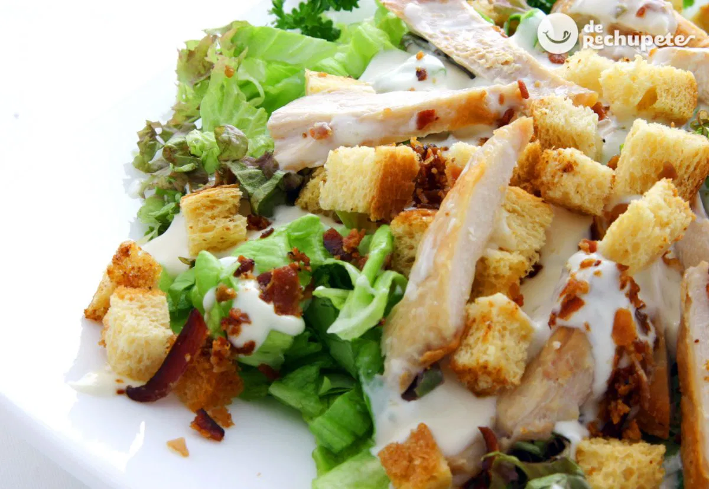

Ensalada César

Ingredientes
Para la ensalada
- Lechuga romana
- Pollo a la plancha
- Queso parmesano
- Crutones
Para la salsa
- Aceite de oliva
- Yogur natural
- Mostaza
- Ajo
- Zumo de limón
Preparación
- Haz la salsa mezclando todos los ingredientes en un bol.
- Corta la lechuga, el pollo y añade los crutones.
- Vierte la salsa sobre la ensalada y sirve.
Dificultad:bajaCocina:italianaVegetariana:noCelíacos:noAnticáncer:no
‚úîüç≥ü•©
Autor:Anónimo